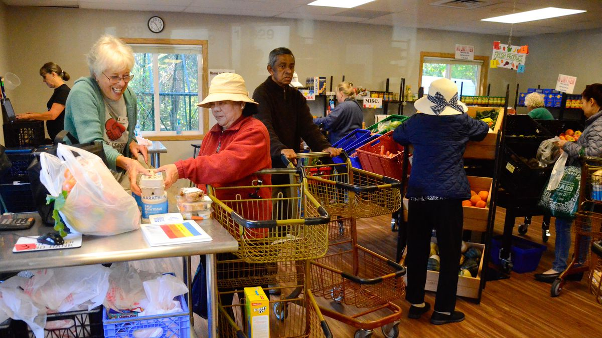

White Center Food Bank
"The White Center Food Bank began in the mid-1970’s as an emergency response to assist struggling families and individuals in the greater White Center and Highline areas during a major economic downturn. Much like today, many in the community were facing difficult economic conditions that left them in need of food resources. Our mission is to minimize hunger while nourishing community, nurturing self-reliance, and embracing our rich cultural diversity" -White Center Food Bank
Website
https://www.whitecenterfoodbank.org/
Address
10829 8th Ave SW Seattle, WA 98146
Phone Number
206-762-2848
Open/Closed Status
Open
Hours of Operation
Monday–Friday: 8:00am – 4:00pm